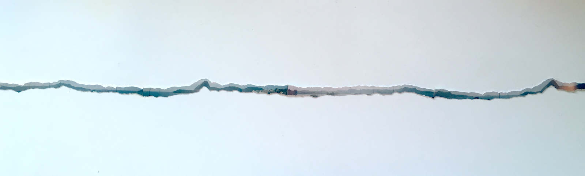

rasgar 30 horizontes descartáveis em um dia (tear 30 disposable horizons in one day)

2015
site specific, 2m x 2m
câmera descartável, impressão a laser sobre papel fotográfico
(disposable camera, laserprint on photographic paper)

2015
site specific, 2m x 2m
câmera descartável, impressão a laser sobre papel fotográfico
(disposable camera, laserprint on photographic paper)